<!DOCTYPE lake>
<h2 data-lake-id="nvXxm" data-lake-index-type="2" id="nvXxm"><span data-lake-id="ub152572a" id="ub152572a">MQTT协议概述</span></h2><p data-lake-id="u2eb6c14e" id="u2eb6c14e"><span data-lake-id="ua7391734" id="ua7391734">MQTT（Message Queuing Telemetry Transport）是一种轻量级的消息传输协议，设计用于在低带宽和不稳定网络环境下进行高效的通信。以下是MQTT协议的主要特点：</span></p><p data-lake-id="ucb9494ce" id="ucb9494ce"><span data-lake-id="ue3289eaf" id="ue3289eaf">​</span><br/></p><p data-lake-id="u0f663288" id="u0f663288"><strong><span data-lake-id="u3a325cb3" id="u3a325cb3">发布/订阅模式：</span></strong><span data-lake-id="u9c34420f" id="u9c34420f">MQTT采用发布/订阅模式，其中客户端可以订阅一个或多个主题（Topic），而服务器则负责将消息发布到这些主题。这种模式使得多个客户端可以同时接收到感兴趣的消息。</span></p><p data-lake-id="u0d58f524" id="u0d58f524"><strong><span data-lake-id="uc56b4ea6" id="uc56b4ea6">轻量级：</span></strong><span data-lake-id="u5e3ef635" id="u5e3ef635">MQTT协议非常轻量级，协议头部信息很小，有效减少了网络传输的开销和数据流量。这使得MQTT非常适合在低带宽和有限资源的设备上使用，例如物联网设备。</span></p><p data-lake-id="u90de952c" id="u90de952c"><strong><span data-lake-id="u2218f099" id="u2218f099">QoS级别：</span></strong><span data-lake-id="u45e0f4ad" id="u45e0f4ad">MQTT支持三个不同的消息传输质量（QoS）级别：0、1和2。QoS级别决定了消息传输的可靠性和保证程度。较高的QoS级别会增加通信开销，但可以提供更可靠的消息传输。</span></p><ul list="u5c83ec94"><li data-lake-id="u027cdea9" fid="ud244e994" id="u027cdea9"><span data-lake-id="u4acf36b8" id="u4acf36b8">QoS 0：最多一次交付</span></li><li data-lake-id="u96289642" fid="ud244e994" id="u96289642"><span data-lake-id="u8541fd88" id="u8541fd88">QoS 1：至少一次交付</span></li><li data-lake-id="udfd58298" fid="ud244e994" id="udfd58298"><span data-lake-id="u4430cebc" id="u4430cebc">QoS 2：只有一次交付</span></li><li data-lake-id="u9c5a0bbb" fid="ud244e994" id="u9c5a0bbb"><span data-lake-id="u9b8c0edc" id="u9b8c0edc">阿里云关于QoS的介绍：https://developer.aliyun.com/article/1362875</span></li></ul><p data-lake-id="uacf6afec" id="uacf6afec"><strong><span data-lake-id="ua0f17c70" id="ua0f17c70">可靠性和持久性：</span></strong><span data-lake-id="ua24b0c06" id="ua24b0c06">MQTT协议具有可靠性和持久性机制。客户端可以选择是否要求服务器保留未传递的消息，以便在客户端重新连接时重新发送。这确保了即使在网络中断或重新连接时，消息也不会丢失。</span></p><p data-lake-id="u05f5a43d" id="u05f5a43d"><strong><span data-lake-id="uaf0a4497" id="uaf0a4497">安全性：</span></strong><span data-lake-id="u48ba151a" id="u48ba151a">MQTT协议支持使用TLS/SSL进行加密和身份验证，以确保通信的安全性。这对于保护敏感数据和防止未经授权的访问非常重要。</span></p><p data-lake-id="u3441bdb7" id="u3441bdb7"><span data-lake-id="ua2ecc2ad" id="ua2ecc2ad">​</span><br/></p><p data-lake-id="udc2f5d94" id="udc2f5d94"><span data-lake-id="u497ab317" id="u497ab317">总结而言，MQTT协议是一种灵活、可靠且适用于物联网应用的通信协议。它具有低开销、轻量级和可扩展等特点，使得它成为物联网设备之间进行高效通信的理想选择。</span></p><p data-lake-id="u7ec6770a" id="u7ec6770a">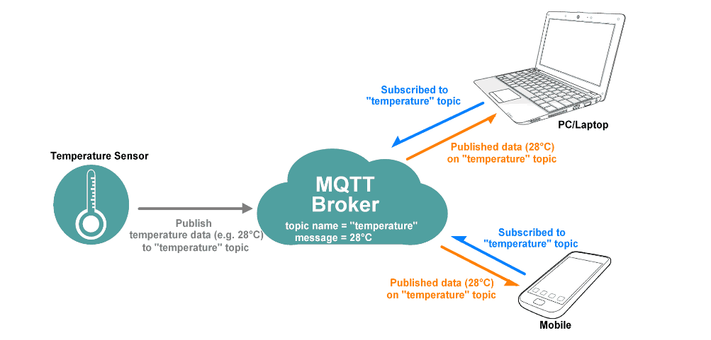</p><p data-lake-id="u21d272ed" id="u21d272ed"><br/></p><p data-lake-id="ue734fa63" id="ue734fa63"><span data-lake-id="ufa3add05" id="ufa3add05">常用MQTT Broker：华为云，阿里云，涂鸦云，emqx ，onenet</span></p><p data-lake-id="u19ace2a0" id="u19ace2a0"><br/></p><h2 data-lake-id="JvXG6" data-lake-index-type="2" id="JvXG6"><span data-lake-id="ube17af01" id="ube17af01">华为云配置</span></h2><p data-lake-id="u0ee89c74" id="u0ee89c74"><span data-lake-id="ud03a7de2" id="ud03a7de2">华为物联网平台：</span><a data-lake-id="uee2fdb6c" href="https://www.huaweicloud.com/product/iothub.html" id="uee2fdb6c" rel="noopener noreferrer" target="_blank"><span data-lake-id="uedf1d2e0" id="uedf1d2e0">https://www.huaweicloud.com/product/iothub.html</span></a></p><p data-lake-id="u31317030" id="u31317030"><span data-lake-id="u7d900b72" id="u7d900b72">云端数据下发：</span><a data-lake-id="ub47040a5" href="https://support.huaweicloud.com/usermanual-iothub/iot_01_0339.html" id="ub47040a5" rel="noopener noreferrer" target="_blank"><span data-lake-id="u910da9bb" id="u910da9bb">https://support.huaweicloud.com/usermanual-iothub/iot_01_0339.html</span></a></p><p data-lake-id="u7896fcfc" id="u7896fcfc"><span data-lake-id="u9ea917f6" id="u9ea917f6">云端数据上报：</span><a data-lake-id="u8478fcea" href="https://support.huaweicloud.com/usermanual-iothub/iot_01_0326.html" id="u8478fcea" rel="noopener noreferrer" target="_blank"><span data-lake-id="uc92547af" id="uc92547af">https://support.huaweicloud.com/usermanual-iothub/iot_01_0326.html</span></a></p><p data-lake-id="u427f9b07" id="u427f9b07"><span data-lake-id="u2111d583" id="u2111d583">​</span><br/></p><h3 data-lake-id="nlZOT" data-lake-index-type="2" id="nlZOT"><span data-lake-id="ue9414d17" id="ue9414d17">开通设备接入 IoTDA</span></h3><p data-lake-id="ua0f5345a" id="ua0f5345a"><span data-lake-id="uefe8a543" id="uefe8a543">打开</span><a data-lake-id="u21a6b850" href="https://console.huaweicloud.com/iotdm/?region=cn-east-3#/dm-portal/instance" id="u21a6b850" rel="noopener noreferrer" target="_blank"><span data-lake-id="u4aa992bf" id="u4aa992bf">https://console.huaweicloud.com/iotdm/?region=cn-east-3#/dm-portal/instance</span></a></p><p data-lake-id="u1453a87b" id="u1453a87b"><span data-lake-id="u871bd6f0" id="u871bd6f0">点击开通免费单元</span></p><p data-lake-id="u30eebf57" id="u30eebf57">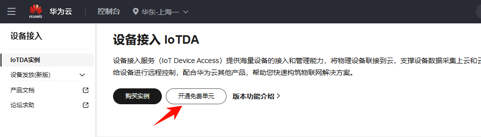</p><p data-lake-id="ucbf29ae4" id="ucbf29ae4"><span data-lake-id="u365967b6" id="u365967b6">点立即创建</span></p><p data-lake-id="u40cd2fbc" id="u40cd2fbc">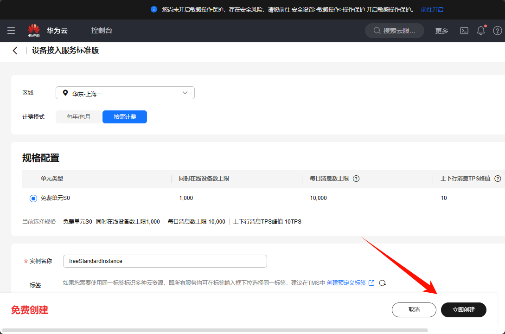</p><p data-lake-id="u1e3d4a46" id="u1e3d4a46"><span data-lake-id="u766a89f9" id="u766a89f9">等待创建完毕后，进入实例</span></p><p data-lake-id="u8aeb0e91" id="u8aeb0e91">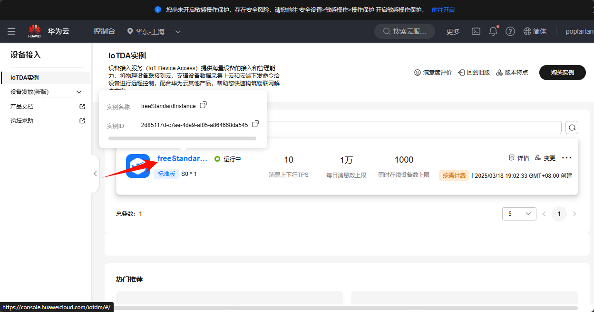</p><h3 data-lake-id="L9fyx" data-lake-index-type="2" id="L9fyx"><span data-lake-id="u63a1cb95" id="u63a1cb95">创建产品</span></h3><p data-lake-id="u79ef0f7d" id="u79ef0f7d">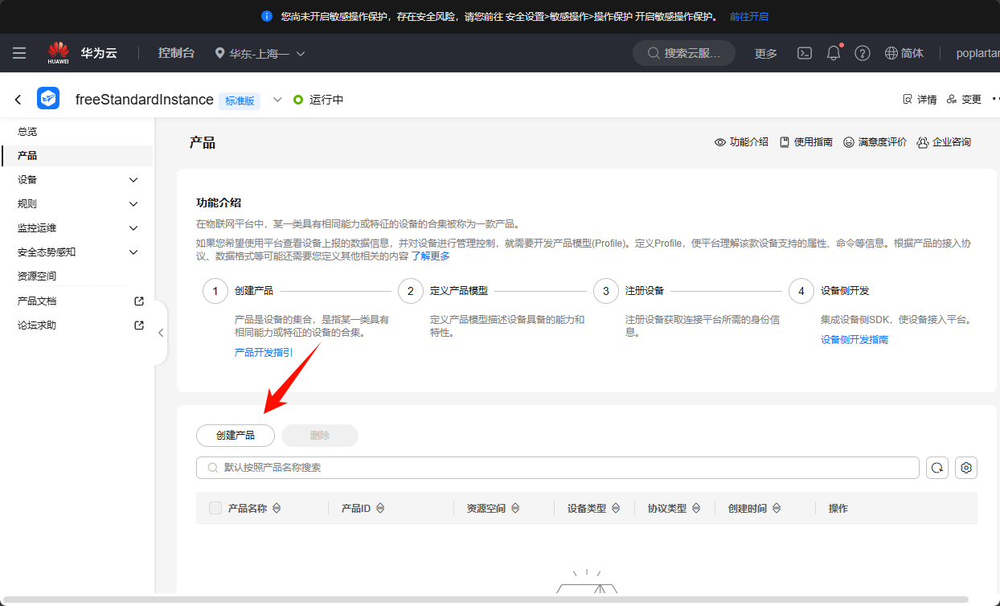</p><p data-lake-id="u3a99a1a9" id="u3a99a1a9"><span data-lake-id="uc386fde6" id="uc386fde6">填写产品详清</span></p><p data-lake-id="uf3ff86b1" id="uf3ff86b1">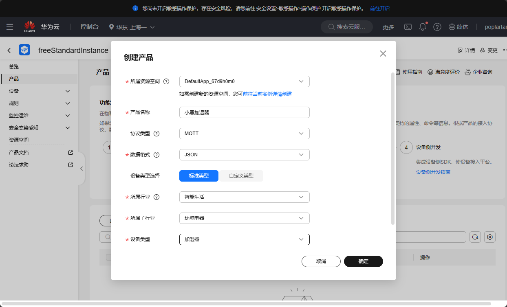</p><p data-lake-id="u18afb9c5" id="u18afb9c5"><span data-lake-id="u9b0c7aa6" id="u9b0c7aa6">进入产品详情</span></p><p data-lake-id="u08c9a34b" id="u08c9a34b">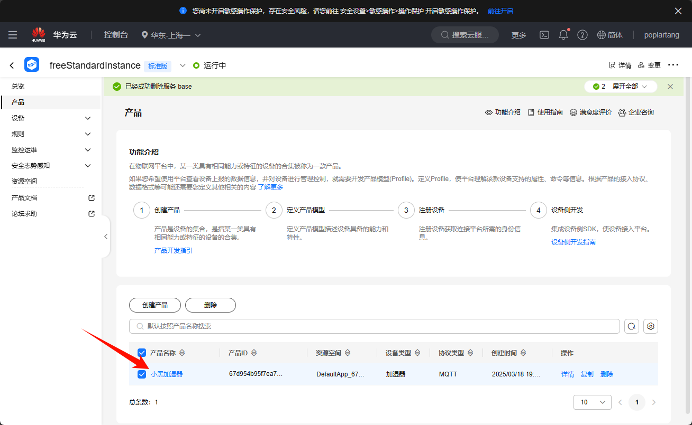</p><p data-lake-id="u93e8f989" id="u93e8f989"><span data-lake-id="ub48875bf" id="ub48875bf">点击【上传模型文件】</span></p><p data-lake-id="u5c771c63" id="u5c771c63">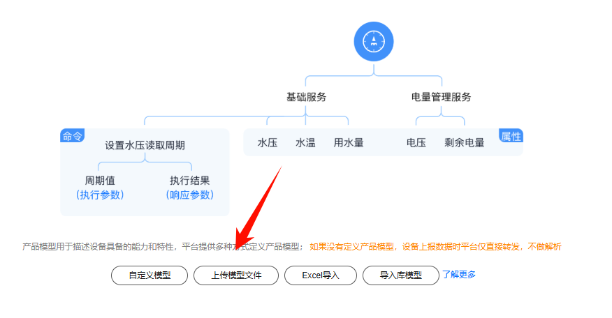</p><p data-lake-id="u65decdbd" id="u65decdbd"><span data-lake-id="ucf721939" id="ucf721939">上传如下zip文件：</span><a class="yuque-card-link" href="../../_assets/189a4cc4eff8d032138f9dc6.zip">huawei_model.zip</a><span data-lake-id="u68b25eec" id="u68b25eec"> 也可自己进行自定义模型</span></p><p data-lake-id="ube13756a" id="ube13756a">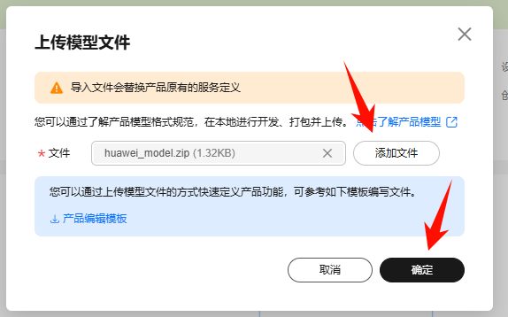</p><p data-lake-id="ubcece8bf" id="ubcece8bf"><span data-lake-id="ucfb69b3c" id="ucfb69b3c">效果如下</span></p><p data-lake-id="ud6ca0050" id="ud6ca0050">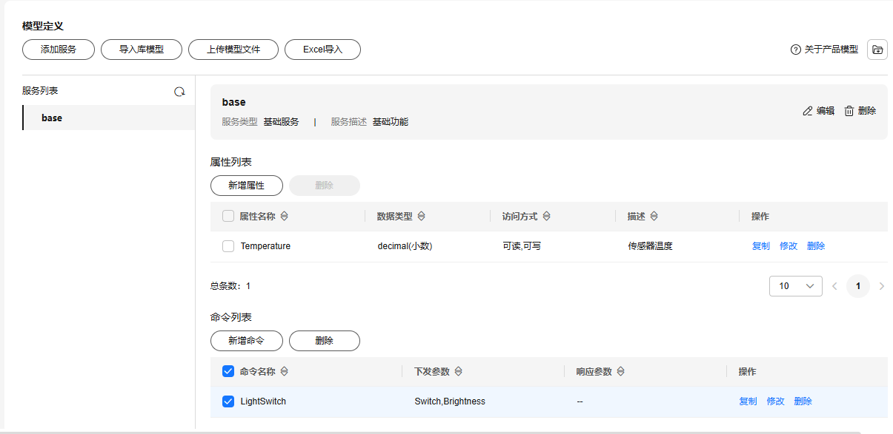</p><p data-lake-id="ua8374911" id="ua8374911"><br/></p><h3 data-lake-id="ypDOx" data-lake-index-type="2" id="ypDOx"><span data-lake-id="ud7e8cbb8" id="ud7e8cbb8">添加设备</span></h3><p data-lake-id="ue406547b" id="ue406547b">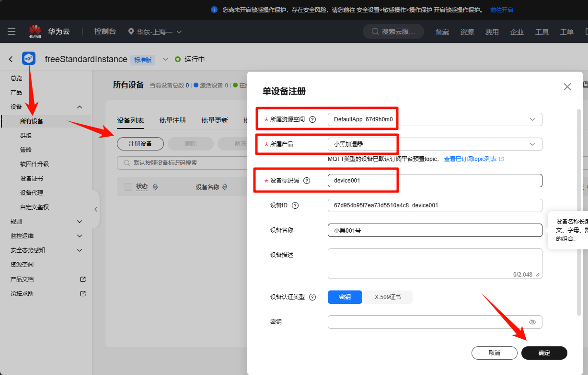</p><p data-lake-id="u32a99c55" id="u32a99c55"><span data-lake-id="u8f63900c" id="u8f63900c">点击详情查看设备</span></p><p data-lake-id="ufc060107" id="ufc060107">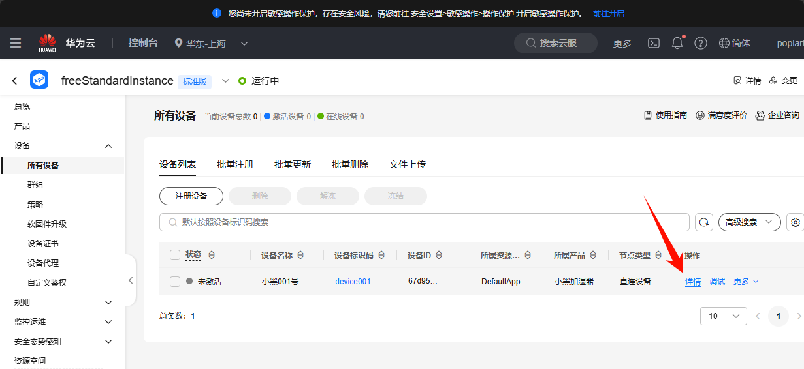</p><p data-lake-id="ue908a9e1" id="ue908a9e1"><span data-lake-id="u9e7b0184" id="u9e7b0184">查看MQTT连接参数</span></p><p data-lake-id="uf4932575" id="uf4932575">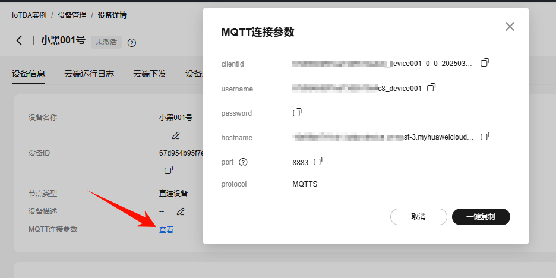</p><p data-lake-id="u2672f926" id="u2672f926"><br/></p><h2 data-lake-id="C2Lym" data-lake-index-type="2" id="C2Lym"><span data-lake-id="u1c5b44ea" id="u1c5b44ea">设备发布话题</span></h2><p data-lake-id="u3f07ec8d" id="u3f07ec8d"><span data-lake-id="u9b1b11ca" id="u9b1b11ca">参考文档：云端数据上报 </span><a data-lake-id="u9e6288b3" href="https://support.huaweicloud.com/usermanual-iothub/iot_01_0326.html" id="u9e6288b3" rel="noopener noreferrer" target="_blank"><span data-lake-id="uf94dd9cd" id="uf94dd9cd">https://support.huaweicloud.com/usermanual-iothub/iot_01_0326.html</span></a></p><p data-lake-id="ufd5f6fd9" id="ufd5f6fd9"><span data-lake-id="u4b491ff7" id="u4b491ff7">话题地址：</span><code data-lake-id="u247157f7" id="u247157f7"><span data-lake-id="u3ab9e09e" id="u3ab9e09e">$oc/devices/{device_id}/sys/properties/report</span></code><span data-lake-id="u3fb12a3c" id="u3fb12a3c">，记得将</span><code data-lake-id="ub42101b3" id="ub42101b3"><span data-lake-id="u57cd0848" id="u57cd0848">{device_id}</span></code><span data-lake-id="u89e8c09b" id="u89e8c09b">替换为设备id</span></p><p data-lake-id="ub78350c3" id="ub78350c3"><span data-lake-id="ubc39c7db" id="ubc39c7db">话题内容：</span></p><span class="yuque-card-unsupported">[codeblock]</span><p data-lake-id="u8eb17456" id="u8eb17456"><br/></p><h2 data-lake-id="KtZNR" data-lake-index-type="2" id="KtZNR"><span data-lake-id="u4e03dd48" id="u4e03dd48">参考示例</span></h2><span class="yuque-card-unsupported">[codeblock]</span><h2 data-lake-id="QLsYr" data-lake-index-type="2" id="QLsYr"><span data-lake-id="u99cf6189" id="u99cf6189">micropython版-物联网</span></h2><h3 data-lake-id="JnOBm" data-lake-index-type="2" id="JnOBm"><span data-lake-id="ue80ceeb7" id="ue80ceeb7">环境搭建</span></h3><p data-lake-id="u9302455a" id="u9302455a"><span data-lake-id="ucb82cbeb" id="ucb82cbeb">安装umqtt.simple包</span></p><p data-lake-id="u92d283a4" id="u92d283a4">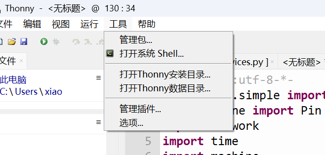</p><p data-lake-id="u535950d2" id="u535950d2"><br/></p><p data-lake-id="u4ce8bbff" id="u4ce8bbff">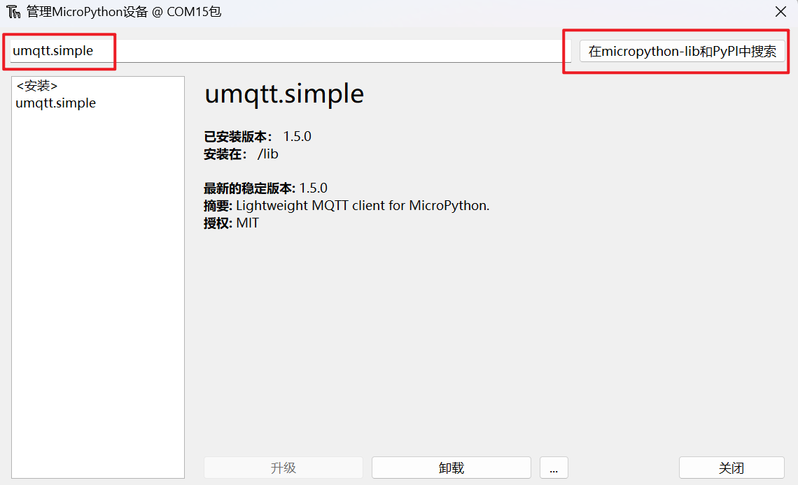</p><h3 data-lake-id="h8k3F" data-lake-index-type="2" id="h8k3F"><span data-lake-id="u66e61f5f" id="u66e61f5f">实现步骤</span></h3><ol list="uf226d664"><li data-lake-id="uf1020639" fid="u889a6cfc" id="uf1020639"><span data-lake-id="u33bd0054" id="u33bd0054">准备好阿里云设备连接参数</span></li><li data-lake-id="u5372c4b6" fid="u889a6cfc" id="u5372c4b6"><span data-lake-id="u866a199d" id="u866a199d">连接wifi</span></li><li data-lake-id="uec44729d" fid="u889a6cfc" id="uec44729d"><span data-lake-id="u9c6f733c" id="u9c6f733c">创建MQTTClient对象</span></li><li data-lake-id="u94443c38" fid="u889a6cfc" id="u94443c38"><span data-lake-id="uf21f98af" id="uf21f98af">订阅消息</span></li><li data-lake-id="ueb65d0ab" fid="u889a6cfc" id="ueb65d0ab"><span data-lake-id="u5b98d7d0" id="u5b98d7d0">定时发布消息</span></li></ol><p data-lake-id="u7ec6b33a" id="u7ec6b33a"><span data-lake-id="uae3cc4c7" id="uae3cc4c7">​</span><br/></p><ol list="u493029bb"><li data-lake-id="uc329bbc2" fid="uc11f23ea" id="uc329bbc2"><span data-lake-id="u25909b1b" id="u25909b1b">准备阿里云设备参数</span></li></ol><p data-lake-id="ufd6869d9" id="ufd6869d9">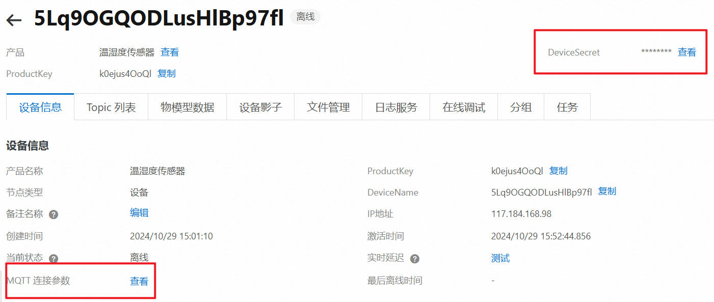</p><ol list="u602b73aa" start="2"><li data-lake-id="u353a76e8" fid="u277f68bf" id="u353a76e8"><span data-lake-id="ua98aa467" id="ua98aa467">连接wifi</span></li></ol><span class="yuque-card-unsupported">[codeblock]</span><p data-lake-id="u356b675b" id="u356b675b"><br/></p><ol list="u099c8dc0" start="3"><li data-lake-id="u9a5ace1f" fid="uf08e9f9b" id="u9a5ace1f"><span data-lake-id="u2d882316" id="u2d882316">创建MQTTClient</span></li></ol><p data-lake-id="u9495fc39" id="u9495fc39"><span data-lake-id="u2fffef87" id="u2fffef87">该操作api最后参数为维持心跳的时长，每隔60s就给服务器发消息，告诉服务器设备还活着</span></p><span class="yuque-card-unsupported">[codeblock]</span><ol list="u603a8373" start="4"><li data-lake-id="uf05e948c" fid="u6638032c" id="uf05e948c"><span data-lake-id="ua9eeac71" id="ua9eeac71">订阅消息</span></li></ol><span class="yuque-card-unsupported">[codeblock]</span><ol list="uc444f291" start="5"><li data-lake-id="ucf33d00e" fid="u1e2c3442" id="ucf33d00e"><span data-lake-id="udae16f90" id="udae16f90">等待用户数据</span></li></ol><span class="yuque-card-unsupported">[codeblock]</span><h2 data-lake-id="yxaq8" id="yxaq8"><br/></h2>